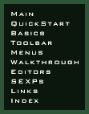

|  |
Index
|
| |
Click on a topic to go to the appropriate
section. You should then be able to find what you need within a
page or so.
- alt.games.descent
- Artificial Intelligence (AI)
-
Accepting Orders From Players
Capital Ships
Dynamic Goals
Initial Orders
Skill Level
Teams
See also Orders, Teams
- Asteroids
-
Automatically Targeting
Field
Lone
- Axis
Constraints
- Bitmaps
- Background
-
Editor
Hiding / Showing
- Backup, Automatic
- Beam Weapons, Enabling, Example
- Briefing Editor
- Camera
-
Leveling / Aligning With Grid
Moving
Speed
Zooming
See also View
- Campaigns
-
Editor
See also Red Alert
- Capital Ships
-
Beam Weapons
Damaging in Advance
Examples
Keeping Together
Limited AI
- Cargo
-
Inspecting
Setting
- Cartesian Coordinates
- Colors
-
Wire-Frame Outlines
Briefing Text
- Command Briefing Editor
- Compass, 3D
- Constraints, Axis
- Contents
- Coordinates
-
Cartesian
Hiding / Showing
- Copying
-
Objects
- Corrupted Mission File, Recovering
- Debriefing Editor
- Descent Chronicles
- Distances, Showing
- Docking
-
Bay, Launching From
Before Mission
Points, Showing
- Drag Mode, Mouse
- Edit Menu
- Editors
-
Asteroid Field Editor
Background Editor
Briefing Editor
Campaign Editor
Command Briefing Editor
Debriefing Editor
Events Editor
Mission Objectives Editor
Mission Specs Editor
Objects Editor
Reinforcements Editor
Shield System Editor
Ships Editor
Team Loadout Editor
Too Big to Fit On Screen
Waypoint Paths Editor
Wings Editor
- Error Checker
- Escorting Ships
- Events
-
Editor
Examples
Repeating
- Exiting
- Explosions, Special
- Files
-
Directory
Menu
New
Opening
Recently Edited
Recovering Corrupted
Reverting to Last Saved Version
Save
Save As
- Form / Disband Wing
- FreeSpace Developer List (FDL)
- FreeSpace SwapMeet
- FreeSpace Universe Discussion List (FUDL)
- Friendly
-
See Teams
- Goals
-
Defining
Displaying Directives on HUD
Invalid
- Grid
-
Adjusting
Anti-Aliased Lines
Fine Lines
Hiding / Showing
Showing Positions Relative To
- Groups Menu
- Help
-
Menu
SEXPs
- Homepage for FreeSpace 2
- Horizon
- Hostile
-
See Teams
- Hotkeys, Assigning to Ships
- Internet Links
- Interplay
- Invulnerability
- Jump Nodes
-
Example
See also Objects
- Kamikaze
- Marking
- See Selection
- Messages, Radio
-
Creating
Disabling for Wing Arrival
- Menus
-
Edit Menu
Editors Menu
File Menu
Groups Menu
Help Menu
Misc Menu
Speed Menu
View Menu
- Misc Menu
- Model Paths
- Models, Showing 3D Rendered
- Mouse Commands
- Mouse Drag Mode
- Movement (inside FRED2)
-
Camera
Speed
Objects
- Multiplayer Missions
- Music
-
Disabling For Ship Arrival
In-Flight
- Nebulae
- Neutral
-
See Teams
- Newsgroup
- Objectives
-
See Goals
- Objects
-
Controlling With Camera Movement Keys
Copying
Creating
Deleting
Editor
Hiding / Showing
Leveling / Aligning With Grid
Moving
Next / Previous
Positioning Precisely
Rotating
Rotating Around
Rotating Locally
Speed (inside FRED2)
- Orders
-
Accepting From Players
Initial
See also Artificial Intelligence
- Outlines, Wire-Frame
- Personas
-
Fighter and Bomber Pilots
- Planets
- Protecting Ships
- Quick Start
- Quitting
- Radio Messages
-
See Messages
- Ramming
- Red Alert
-
Carrying Ships Between Missions Into
Missions
- Reinforcements
- Reloading, Disallowing
- Resolution, Adjusting For Gigantic
Dialog Boxes
- Rotate Around Object
- Rotate Locally
- Scanning
- Select List
- Score
-
For Bringing About Events
For Completing Goals
For Destroying Ships
- Selection
-
Defined
From List
Locking
With the Mouse
- Selection Box
- Selection Lock
- SEXPs (symbolic expressions)
-
Help, Hiding / Showing
- Ships
-
Arrival
Classes
Carrying Between Missions
Damaging Before Mission
Departure
Destroying Before Mission
Editing
Escorting
Protecting
Score for Destroying
See also Objects
- Show Distances
- Speed, Initial
- Speed Menu
- Status Bar
-
Explained
Hiding / Showing
- Statistics, Mission
- Subsystems, Cycling Through
- Suicide
- Suns
- Support Ships, Disallowing
- Symbolic Expressions (SEXPs)
- Teams (Hostile, Friendly, Neutral, Unknown)
-
"All At War" Setting
Mutual Hostility
- Title of Mission
- Toolbar
-
Axis Constraints
Form / Disband Wing
Hiding / Showing
Mouse Drag Mode
Rotate Around Object
Rotate Locally
Select List
Selection Box
Selection Lock
Show Distances
Zoom
- Turrets, Cycling Through
- Tutorial
-
Extended Walkthrough
Quick Start
- Undo
- Unknown
-
See Teams
- Velocity, Initial
- View
-
Camera vs. Current Ship
Menu
See also Camera
- Volition, Inc.
- Walkthrough
-
See Tutorial
- Waypoints
-
Creating
Examples
Renaming Paths
See also Objects
- Weapons
-
Available to Player
Setting for Ships
Preventing Alteration by
Player (all ships)
Preventing Alteration by Player
(single ship)
- Wings
-
Default Hotkeys
Deleting
Disabling Arrival Message
Disbanding
Editor
Forming
Marking
Standard Names
Waves
- Wire-Frame Outlines
- X
- Y
- Z
- Zoom
|
|